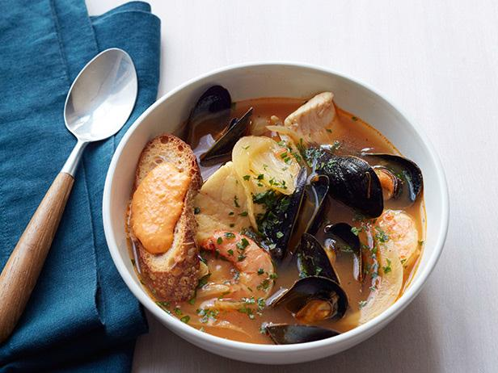

Bouillabaisse

Description
This simply prepared fish stew is a classic French recipe from Marseilles. Serve with a slice of hot toast topped with a spoonful of rouille.
Ingredients
- ¾ cup olive oil
- 2 onions, thinly sliced
- 2 leeks, sliced
- 3 tomatoes - peeled, seeded and chopped
- 4 cloves garlic, minced
- 1 sprig fennel leaf
- 1 sprig fresh thyme
- 1 bay leaf
- 1 teaspoon orange zest
- ¾ pound mussels, cleaned and debearded
- 9 cups boiling water
- salt and pepper to taste
- 5 pounds sea bass
- 1 pinch saffron threads
- ¾ pound fresh shrimp, peeled and deveined
Heat the olive oil in a large saucepan, and add the onions, leeks, chopped tomatoes, and garlic. Cook and stir over a low heat for a few minutes until all vegetables are soft.
Stir in the fennel, thyme, bay leaf, and orange zest. Add shellfish and boiling water; stir to combine. Season to taste with salt and black pepper. Turn up the heat to high, and boil for about 3 minutes to allow the oil and water to combine.
Add fish, and reduce the heat to medium. Continue cooking for 12 to 15 minutes, or until fish is cooked. The fish should be opaque and tender, but still firm. Fish should not be falling apart.
Taste the bouillabaisse and adjust the seasoning. Stir in saffron, and then pour soup into a warmed tureen or soup dishes. Serve immediately.
Other recipes